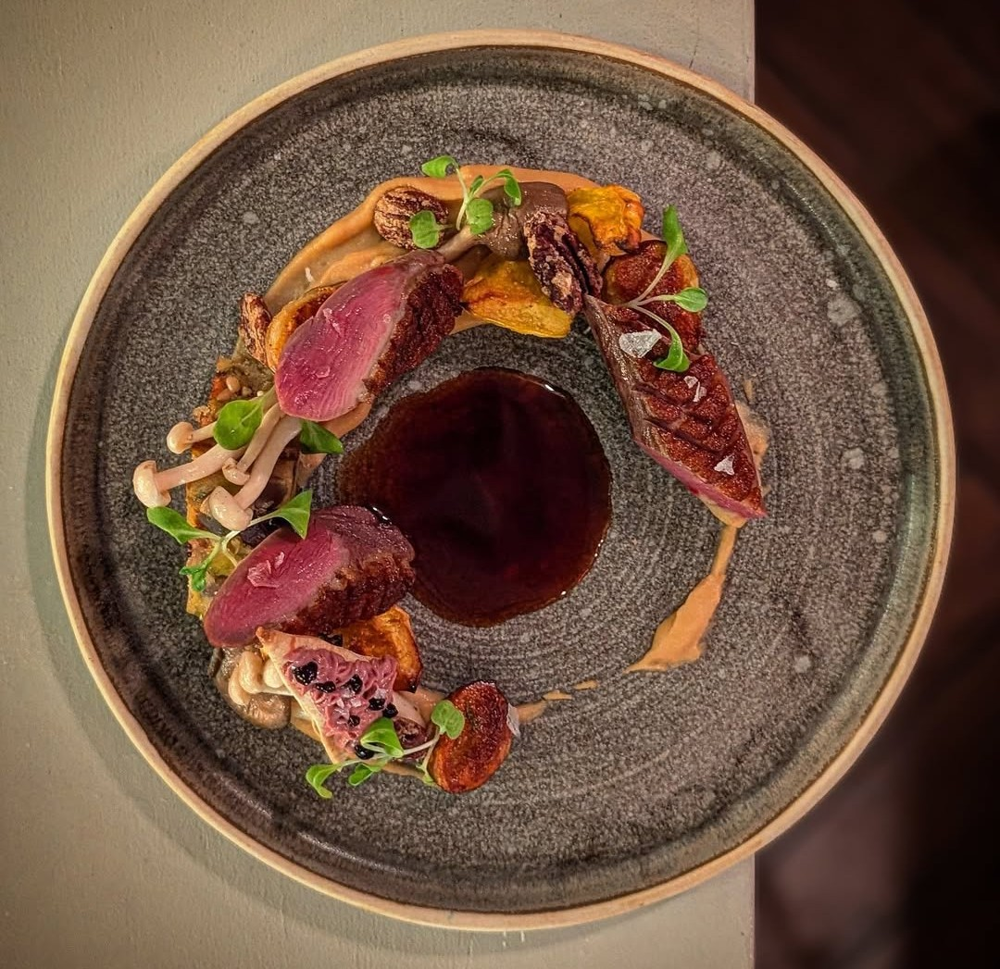

Ottawa's fine dining scene has changed shape over the last several years, and the clearest sign of it is how many kitchens have committed to the tasting menu format. Rather than a long à la carte list, a growing number of the city's best restaurants now build the entire evening around a single, unfolding sequence of courses — a format that asks more of both the kitchen and the diner, and one Ottawa has embraced with real conviction.
Atelier and Antheia sit at the centre of that shift. Atelier has no printed menu at all; chef Marc Lepine's constantly evolving tasting experience has made the Rochester Street restaurant the most talked-about reservation in the city, built on well over a decade of refinement. Antheia takes a narrower, more intense approach — a sixteen-seat counter where chef Briana Kim's fermentation-driven menu unfolds course by course, shaped by ingredients that have often been curing or preserving for months before they ever reach the table. Together, the two represent Ottawa's two Canadian Culinary Championship winners, and arguably its most ambitious kitchens.
Aiana and Beckta offer two very different versions of the same commitment to the format. Aiana's nine-course menu unfolds inside one of downtown's most dramatic dining rooms, pairing classical French technique with a more global sensibility. Beckta takes a quieter approach, built on a five-course menu and a wine programme that has anchored the Elgin Street institution for more than two decades — proof that a tasting menu doesn't need spectacle to be memorable.

Beyond those four, the range of Ottawa's fine dining scene becomes even clearer. Gitanes brings a French sensibility to Elgin Street, built around a serious wine list and a refined, unhurried room. Stofa lets Canadian ingredients speak for themselves rather than chasing trends. Raphaël offers something genuinely different downtown — bold, citrus-forward Peruvian cooking in a warm dining room. Fauna pairs inventive, occasionally unexpected combinations with a neighbourhood ease that keeps it from ever feeling like a stunt. Le St. Laurent carries a more classical, French-leaning formality in the city's east end, while TOMO's HIKARU counter offers Ottawa's most exclusive omakase experience. And Restaurant e18hteen, tucked into a nineteenth-century ByWard Market building, has quietly built one of the city's longest-running fine dining reputations on classic Canadian steak and seafood.
Taken together, these eleven restaurants say something real about where Ottawa's dining scene stands right now — a city with enough range to support both a sixteen-seat fermentation counter and a two-decade wine institution, often within a few blocks of each other.